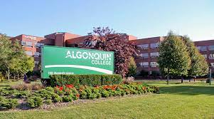

Who am I ?
I am Eman Ibrahim, an international student currently enrolled in the computer programming program at Algonquin College, currently at my second level. Prior to pursuing programming, I worked as a Mathematics teacher after completing my bachelor's degree in Mathematics and Education. Recognizing programming as a natural extension of the problem-solving skills inherent in Mathematics, I discovered an interest in programming courses during my first degree. This interest led me to pursue a diploma in computer programming . Through hands-on projects in my current studies, I have further developed my passion for programming and databases.
Hobbies and Activities
There are differnt things that I like to do in my free time:
- Reading
- Painting
- Walking in nature
- Exercising
My College
I am currently a student in Algonquin college. It has 3 branches: Ottawa, Pembroke and Perth. I go to the Ottawa branch where I take my Computer Programming Diploma. There is a big variety of programs in Algonquin College. If you would like to know more about Algonquin college, please visit the wwbsite by clicking here.